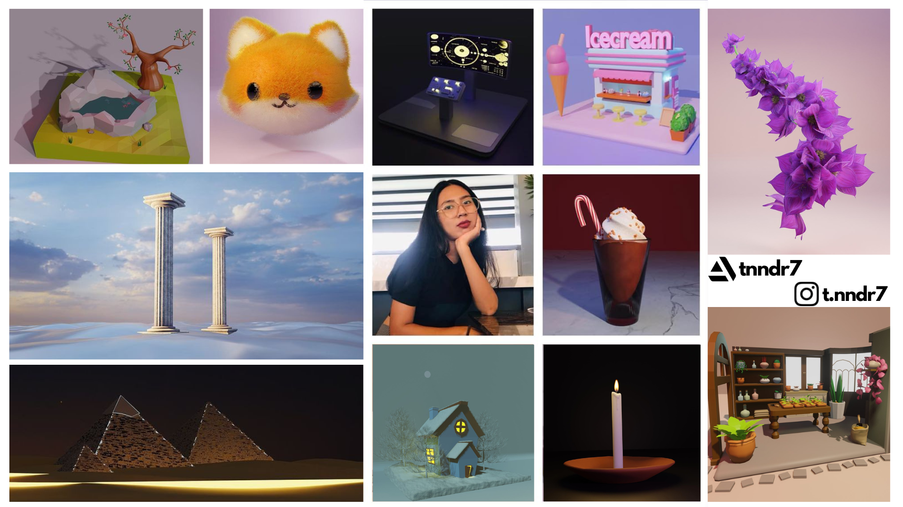

Hello, I am T. Nandar
It's been (
) months since I started learning 3D art using Blender. As a beginner, I feel accomplished for every new skill I learned.
I feel joy when I'm learning to create 3D artworks.
Something I've never felt in Med School.
-
Started Learnig Blender
|
July, 2022
#ArtVsArtist2022
My accomplished 2022! I used to draw as a hobby. Now I'm working on Blender full-time.
My 2023 goal is to land a full-time 3D artist job. And make use of my skills to full potential.
-
Challenge Completed
|
December, 2022
#ArtVsArtist2022
{kind=link}
Kitsune

Raining Marshmallows

Purple Orchid

I Kept Learning
When I started, I wasn't really sure if I can work on 3D models with my laptop.
8GB RAM and outdated graphic card, it was slow and results were never as I expected.
But no excuse made when I work with passion.
Voilà, my Orchid and my Greenhouse. The achievements I'm so proud of in my learning curve.
- New Skills Unlocked
Greenhouse Experiment
{kind=link}
Full-Time Artist
I am full-time studying 3D Art in Blender.
"Full-time" being the time I'm not fiddling around my succelents or binge watch K-drama.
Btw, my fav K-drama is '25 21' :)
Currently, I'm open to freelance commission works. So if you love my artworks, feel free to contact me.
- Blender 3D Artist